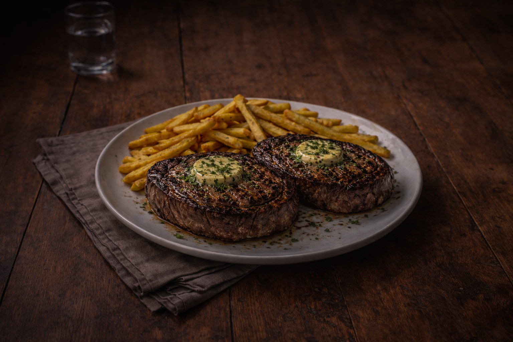
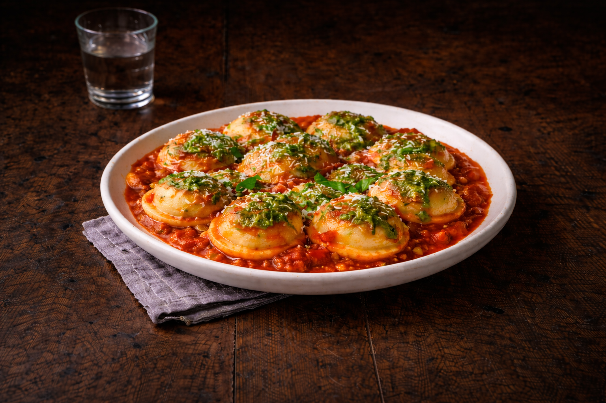

Un bodegón es mucho más que un restaurante: es una tradición argentina que combina cocina casera, porciones abundantes y un ambiente familiar donde todos se sienten bienvenidos. Nació como un espacio sencillo y popular, pensado para reunir a trabajadores, vecinos y familias alrededor de la mesa. Se caracteriza por ofrecer platos clásicos y contundentes, preparados con recetas tradicionales y sabores auténticos. La idea principal es que nadie se quede con hambre y que cada comida sea una experiencia generosa, tanto en cantidad como en calidad. Más que un lugar para comer, es un punto de encuentro donde se comparten historias, risas y buenos momentos. Un bodegón no sigue modas: mantiene vivas las costumbres. Porque en un verdadero bodegón, la comida es casera y el trato es como en casa.
En Bodegón de Tomás mantenemos viva la tradición de los bodegones argentinos: platos abundantes, sabores caseros y ese ambiente cálido que te hace sentir como en casa. Somos un lugar donde la cocina se prepara como antes, con recetas que pasan de generación en generación y porciones generosas que invitan a compartir. Desde nuestras milanesas gigantes y el clásico matambre a la pizza, hasta pastas caseras y cortes de carne a la parrilla, cada plato está pensado para disfrutar sin apuro. Nuestro espacio combina lo rústico y lo tradicional, con una atmósfera acogedora ideal para reuniones familiares, cenas con amigos o simplemente para darse el gusto de comer bien. En Bodegón de Tomás no solo servimos comida, servimos momentos.Porque un buen bodegón no se explica… se vive